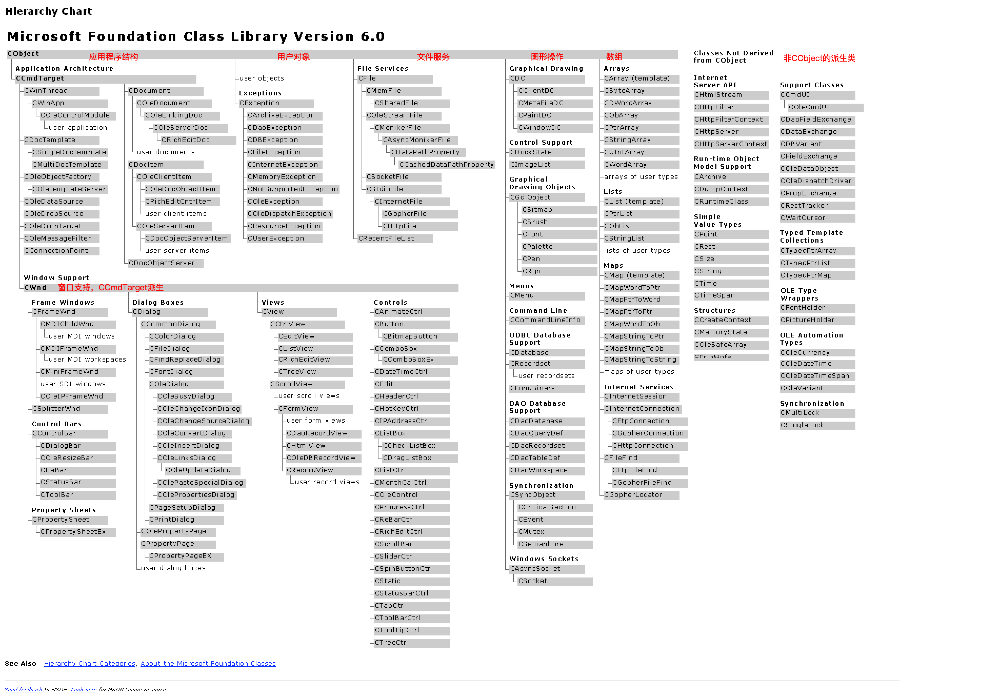
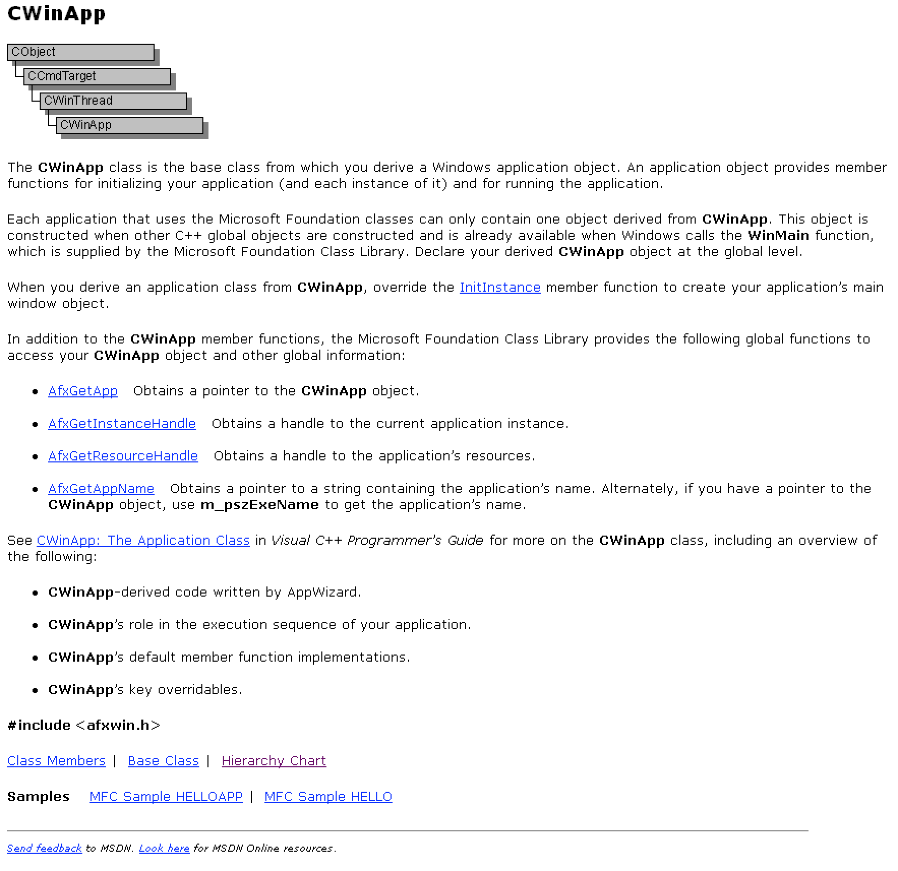
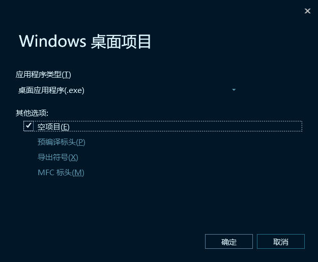
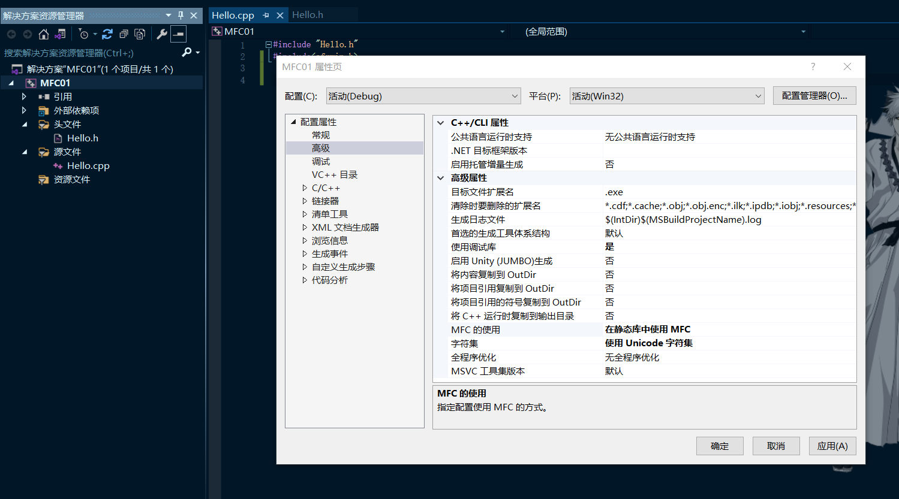
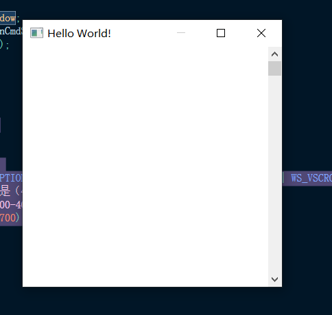
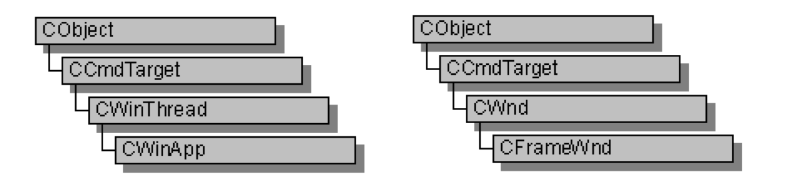
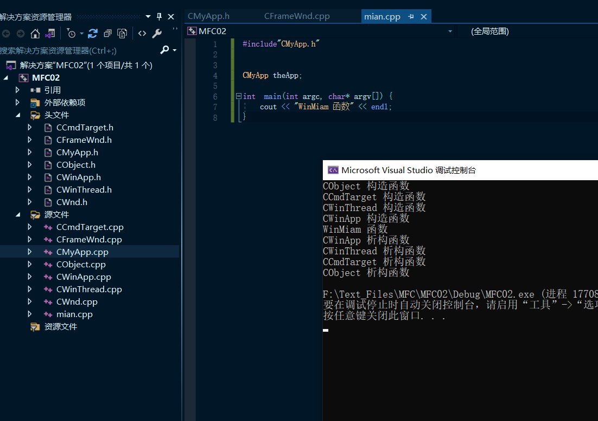
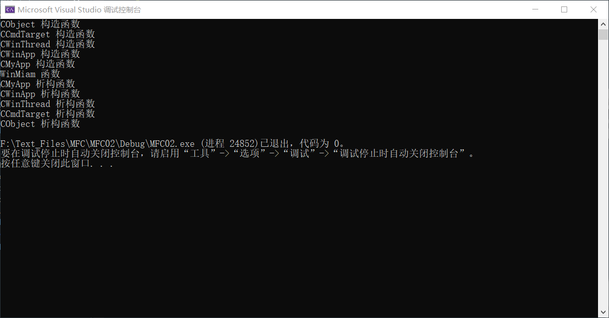
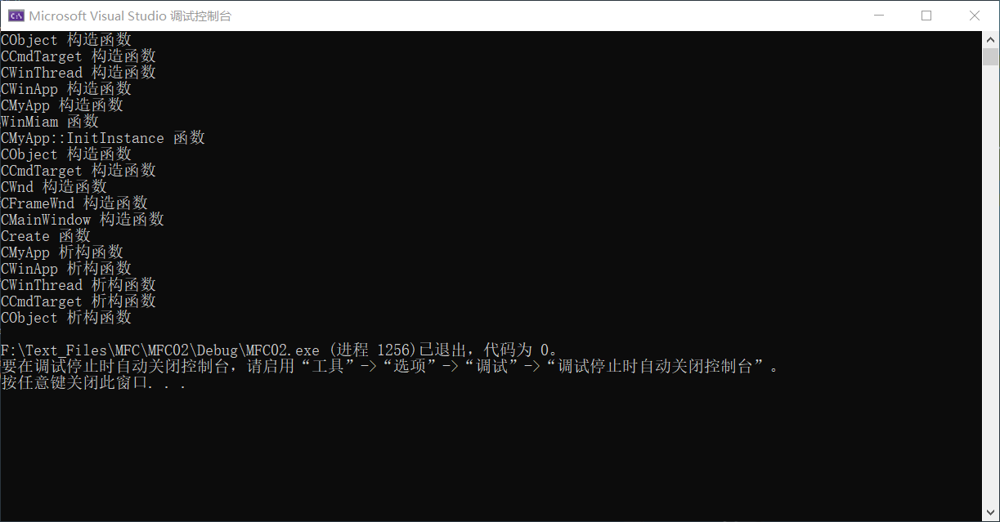
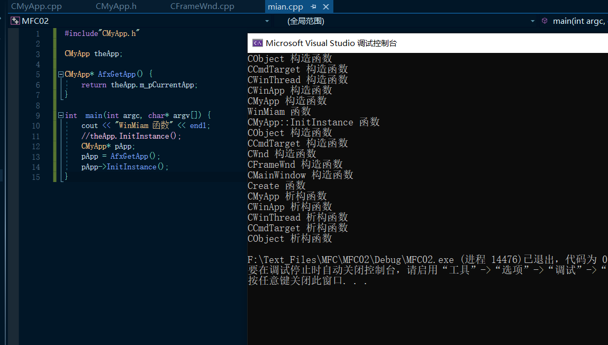

# 楔子
MFC 共有六大核心机制分别是：
- MFC 程序的初始化过程
- RTTI（Runtime Type Information） 运行时类型信息
- Dynamic Creation 动态创建
- Persistence 永久保存
- Message Mapping 消息映射
- Message Routing 消息循环
这次学习的 MFC 教程应该是以《深入浅出 MFC》这本书讲解的。
# MFC 的本质
因为没有系统的学习 MFC，现在写代码出错了都不知道怎么调试。所以准备学一下 MFC 的本质。知其然知其所以然！
MFC (Microsoft Foundation Classes) 是由微软提供的放置 WINAPI 的面向对象的包装的 C++ 类库。
MFC6.0 中大约封装了 200 个类，分别封装了 WINAPI 和 WINSDK 中的结构和过程。
另外 MFC 还提供了一个应用程序框架。例如程序向导和类向导自动生成的代码，这样大大减少了程序员的工作量，提高了开发效率。
MFC 的本质就是 win32 的封装。
# 第一个 MFC 程序
由于根据项目引导生成的代码繁杂冗余，所以我们可以自己来手写 MFC 来创建 Windows 窗口程序，这样就可以避免一些不必要的代码。
本节需要掌握的知识点：
A: CWinApp 可以覆盖的虚函数 InitInstance
B: CWinApp 成员变量 m_pMainWnd
C: CFramWnd 的成员函数 create 以及参数
需要简单了解的内容
A: 通过 MSDN 去查看 MFC 的层次结构图
B: 对 CWinApp 有个初步的认识
C: 对 CFramWnd 有个初步认识
# MFC 的层次结构图
在 MSDN Library 中搜索 hierarchy chart 即可获得 MFC 的层次结构图：

本章我们只需要了解 CWinApp、CFramWnd。
# CWinApp 类
CWinApp 类是派生 Windows 应用程序对象的基类。应用程序对象提供了用于初始化应用程序 (及其每个实例) 和运行应用程序的成员函数。
每个使用 MFC 的应用程序只能包含一个派生自 CWinApp 的对象。这个对象是在其他 c++ 全局对象被构造时被构造的，并且在 Windows 调用 WinMain 函数时已经可用，这个函数是由 MFC 库提供的。在全局级别声明你的派生 CWinApp 对象。
当您从 CWinApp 派生应用程序类时，覆盖 InitInstance 成员函数以创建应用程序的主窗口对象。
他还有一个成员变量 m_pMainWnd 用来记录创建的主窗口对象。
除了 CWinApp 成员函数之外， Microsoft 基础类库还提供了以下全局函数来访问 CWinApp 对象和其他全局信息：
AfxGetApp 获取一个指向 CWinApp 对象的指针。AfxGetInstanceHandle 获取当前应用程序实例的句柄。AfxGetResourceHandle 获取应用程序资源的句柄。AfxGetAppName 获取指向包含应用程序名称的字符串的指针。或者，，如果您有一个指向 CWinApp 对象的指针，请使用 m_pszExeName 获取应用程序的名称。

CWinApp 类代表一个程序本身。
# CFrameWnd 类
CFrameWnd 类提供了 Windows 单文档界面（SDI）重叠或弹出框架窗口的功能，以及用于管理窗口的成员。
要为应用程序创建有用的框架窗口，请从 CFrameWnd 派生类。向派生类添加成员变量以存储特定于您的应用程序的数据。在派生类中实现消息处理程序成员函数和消息映射，以指定在将消息定向到窗口时会发生什么。
有三种方法来构造框架窗口：
1. 使用 Create 直接构造它 （本节需要掌握的内容）
2. 使用 LoadFrame 直接构造它（后续会学）
3. 使用文档模板间接构建它 （后续会学）
注：我们可以认为 CFrameWnd 类取代了窗口过程函数。
Create 成员函数
CFrameWnd :: Create 成员函数语法格式如下：
BOOL Create(LPCTSTR lpszClassName, // 如果类名为 NULL，则以 MFC 内建的窗口类产生一个标准的外框窗口 | |
LPCTSTR lpszWindowName, | |
DWORD dwStyle = WS_OVERLAPPEDWINDOW, | |
const RECT& rect = rectDefault, | |
CWnd* pParentWnd = NULL, // != NULL for popups | |
LPCTSTR lpszMenuName = NULL, | |
DWORD dwExStyle = 0, | |
CCreateContext* pContext = NULL); | |
// 返回值：非零表示初始化成功，否则为 0 |
通过两个步骤构造一个 CFrameWnd 对象：
首先调用构造函数，它构造 CFrameWnd 类的对象，然后调用 Create 成员方法，创建 Windows 框架窗口并将其附加到 CFrameWnd 类的对象；
创建初始化窗口的类名和窗口名称，并注册其样式，父级和关联菜单的默认值。
# 总结
- 基于 MFC 的窗口程序必须也只能有一个由从 CWinApp 派生的对象。
- 我们必须覆盖 CWinApp 的虚函数 InitInstance 在里面创建窗口，并把窗口对象保存在它的成员变量
m_pMainWnd。 - 创建窗口是通过派生
CFrameWnd对象，在它的构造函数里面调用成员函数create。
手动编写 MFC 程序的几个注意事项（这是 VC6）：
- 使用 Win32 Application 去创建项目
- 项目需要包含 MFC 运行库，VC6 设置：Project → Setting → General → Use MFC In Static Library
- 使用头文件 afxwin.h
# 手动创建一个 MFC 程序
这里我用的编译器是 VS2019，步骤如下：
创建一个 Windows桌面项目 选择 桌面应用程序 ：

使用 MFC 静态库：

接下来添加代码：
Hello.h
#pragma once | |
#define WIN32_LEAN_AND_MEAN | |
#include<afxwin.h> | |
class CMyApp:public CWinApp | |
{ | |
public: | |
virtual BOOL InitInstance(); | |
}; | |
class CMainWindow :public CFrameWnd { | |
public: | |
CMainWindow(); | |
}; |
Hello.cpp
#include "Hello.h" | |
CMyApp theApp; | |
BOOL CMyApp::InitInstance() | |
{ | |
m_pMainWnd = new CMainWindow; | |
m_pMainWnd->ShowWindow(m_nCmdShow); | |
m_pMainWnd->UpdateWindow(); | |
return TRUE; | |
} | |
CMainWindow::CMainWindow() { | |
Create( | |
NULL, | |
TEXT("Hello World!"), | |
WS_OVERLAPPED | WS_CAPTION | WS_SYSMENU | WS_THICKFRAME | WS_MAXIMIZEBOX | WS_VSCROLL, | |
// 左上角，既起始位置是（400,300），右下角（800,700） | |
// 700 -300 是高度 800-400 是宽度 | |
CRect(400, 300, 800, 700) | |
); | |
} |
运行结果：

为什么代码里没有 WinMain？MFC 没有 WinMain 函数吗？其实 MFC 是在内部接管了 WinMain，我们可以认为 CWinApp 就是 WinMain，只不过我们没法很直观的看见 WinMain 函数。
# MFC 的初始化过程 1
上面我们手动创建了一个 MFC 程序，但并没有 WinMain 函数，整个程序唯一的语句也就是 CMyApp theApp; 这是具有全局有效性、用来实例对象化的语句。这是 CWinApp 的派生类的全局对象，那么到底是什么启动的程序的运行？应用程序对象又是在什么时候其作用的呢？其实回答这些问题的最好方法就是取看一下 MFC 的主框架源码，但暂时我们还不能这么去做，因为主框架的源码太过于庞大。
这节我们把我的重点突出来。
# 通过代码来模拟 MFC 的初始化过程
- 本节必须掌握的知识点
为什么要声明全局的应用程序对象 (CWinApp)
学会使用类视图快速添加类
- 需要简单了解的内容
CWinApp 的层次结构
CFramWnd 的层次结构
# 代码模拟
用代码模拟 MFC 的初始化过程，我们基于上一章中手动编写的 MFC 代码来模拟。
我们继承两个类 CWinApp、CFrameWnd，这两个类的层次结构如下：

所以在这里我们需要重写 CObject、CCmdTarget、CWinThread、CWnd、CWinApp、CFrameWnd 这几个类...
仅仅是模拟代码，不用写实际功能，写上构造、析构函数即可。
这里要记住：全局变量和全局对象总是在任何其他代码前执行
结果：

# MFC 初始化过程 2
继续进行 MFC 初始化模拟。
在上一节中我们知道了一个全局对象或一个全局变量的实现是早于 WinMain 的，所以我们构造了 CWinApp 对象，先调用它的构造函数然后才进入 WinMain，这样做的好处是什么呢？我们要在 WinMain 执行之前要做的事情都可以这样处理。
注意： WinMian 在 MFC 中并不是封装在类中，因为它是由系统调用的。
# MFC 是如何使用应用程序对象
需要简单了解的内容
CWinApp 类的二个可以覆盖的虚函数
virtual BOOL InitInstance();
virtual int Run();
# 代码模拟
在上一章的模拟代码中我们相比于使用 MFC，还少了很多东西，比如 InitInstance 、 m_pMainWnd 等等。
在上一章节中我们是将 InitInstance 这个虚函数删除的，在本章中我们可以基于上一章节的代码重新定义一下该虚函数，在原 MFC 中（这里我们是模拟）这个虚函数在三个类中都存在：

我们已经了解层次结构所以直接在最高一层去定义，也就是 CWinThread 这个类中去定义即可 virtual bool InitInstance() = 0; 为了省事可以定义为纯虚函数。m_pMainWnd 同样在 CWinThread 类中，我们也模拟着在我们的代码中定义一下： CWnd* m_pMainWnd; 这里注意包含头文件。
接下来在要做的事情和用 MFC 写的一样，在我们的 InitInstance 函数中：
bool CMyApp::InitInstance() | |
{ | |
cout << "CMyApp::InitInstance 函数" << endl; | |
m_pMainWnd = new CFrameWnd; | |
return true; | |
} |
继续执行一下代码：

我们发现并没有调用我们的 InitInstance 函数，由此可以推断出， InitInstance 函数是在 WinMain 中调用的，我们添加代码 theApp.InitInstance();

CObject 构造函数 | |
CCmdTarget 构造函数 | |
CWinThread 构造函数 | |
CWinApp 构造函数 | |
CMyApp 构造函数 | |
WinMiam 函数 | |
CMyApp::InitInstance 函数 | |
CObject 构造函数 | |
CCmdTarget 构造函数 | |
CWnd 构造函数 | |
CFrameWnd 构造函数 | |
CMainWindow 构造函数 | |
Create 函数 | |
CMyApp 析构函数 | |
CWinApp 析构函数 | |
CWinThread 析构函数 | |
CCmdTarget 析构函数 | |
CObject 析构函数 |
以上就是简化版的 MFC 执行流程。
但我们这里还有一个问题就是，我们在模拟 WinMain 函数中是直接用 应用程序对象 去调用的 InitInstance ，但在实际中，WinMain 并不是我们写的，它是如何调用 InitInstance 的呢？
在前面 CWinApp 类的介绍中，我们有一个全局函数 AfxGetApp 获取一个指向 CWinApp 对象的指针。那么我们也可以简单的模拟一下：
在 CMyApp 类中：
class CMyApp :public CWinApp | |
{ | |
public: | |
CMyApp* m_pCurrentApp; // 当前应用程序的指针 | |
CMyApp(); | |
~CMyApp(); | |
virtual bool InitInstance(); | |
}; |
在其构造函数中：
CMyApp::CMyApp() | |
{ | |
cout << "CMyApp 构造函数" << endl; | |
m_pCurrentApp = this; | |
} |
在主程序中定义：
#include"CMyApp.h" | |
CMyApp theApp; | |
CMyApp* AfxGetApp() { | |
return theApp.m_pCurrentApp; | |
} | |
int main(int argc, char* argv[]) { | |
cout << "WinMiam 函数" << endl; | |
//theApp.InitInstance(); | |
CMyApp* pApp; | |
pApp = AfxGetApp(); | |
pApp->InitInstance(); | |
} |

这样差不多既是 MFC 的执行流程了，主要是了解一个大概，后面看 MFC 的源码就清晰多了。
# Reference
https://www.cnblogs.com/liufei1983/p/7131002.html
https://gh0st.cn/Binary-Learning/MFC.html
https://www.cnblogs.com/zpchcbd/p/12266073.html